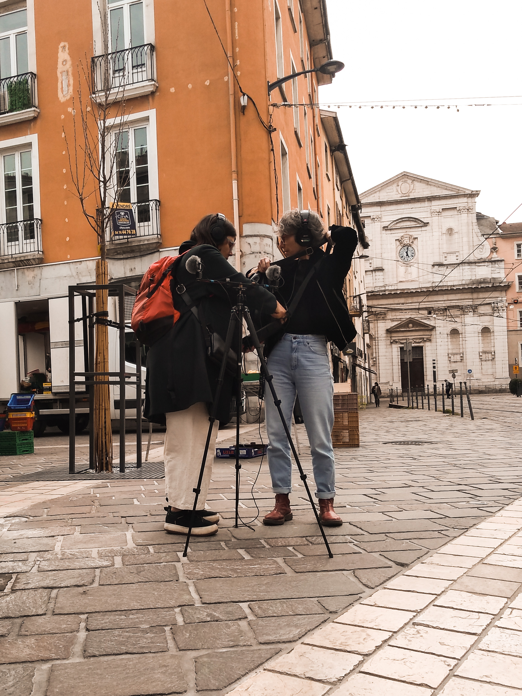
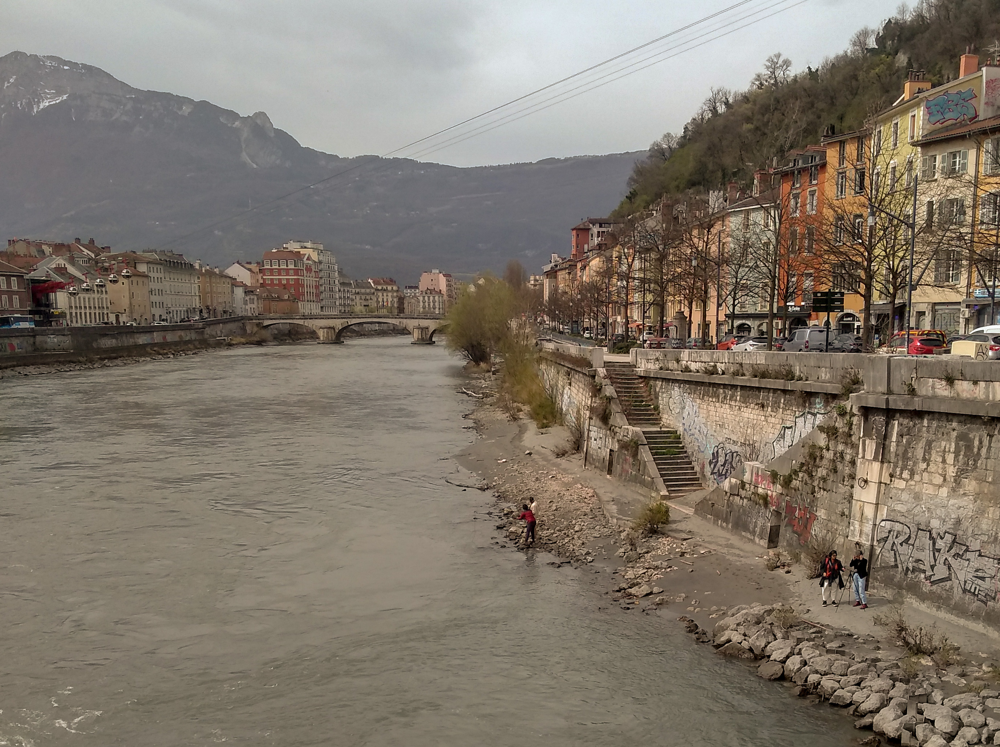
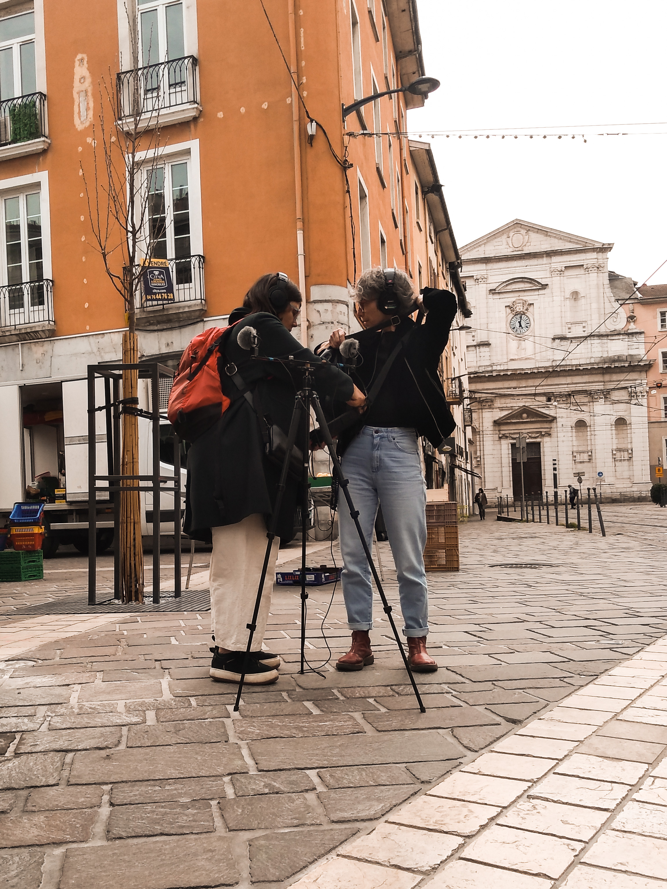
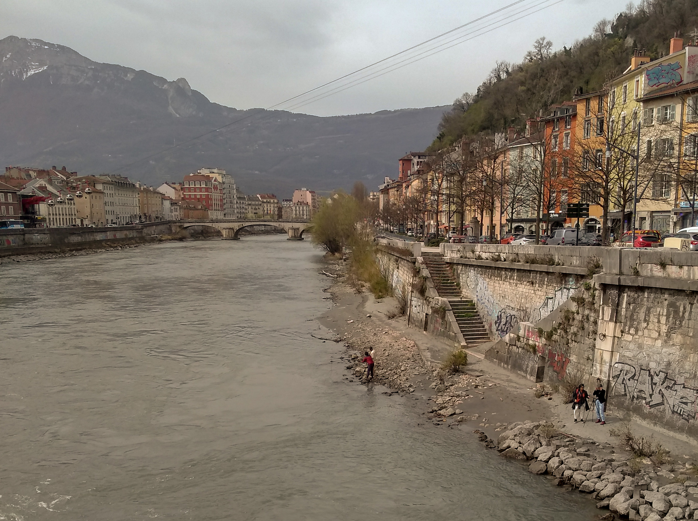
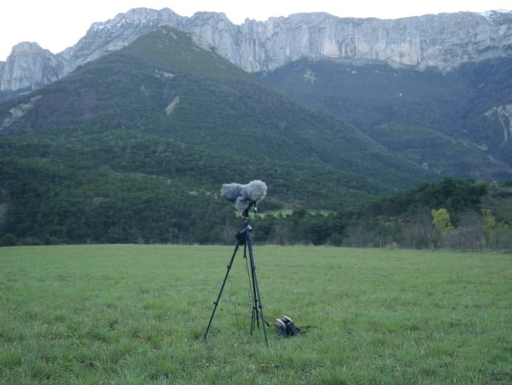
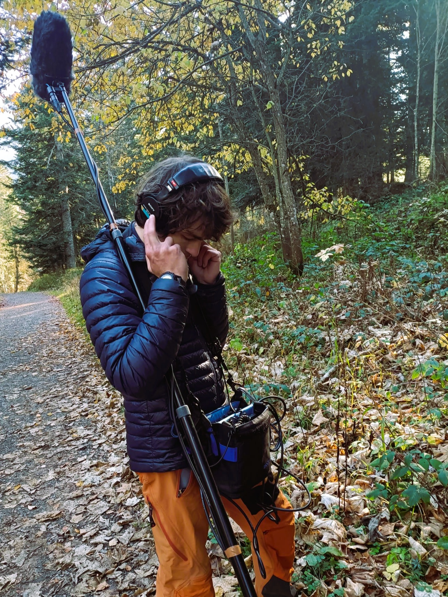
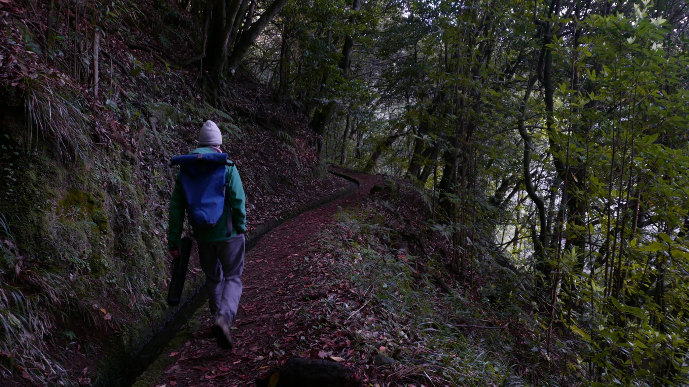
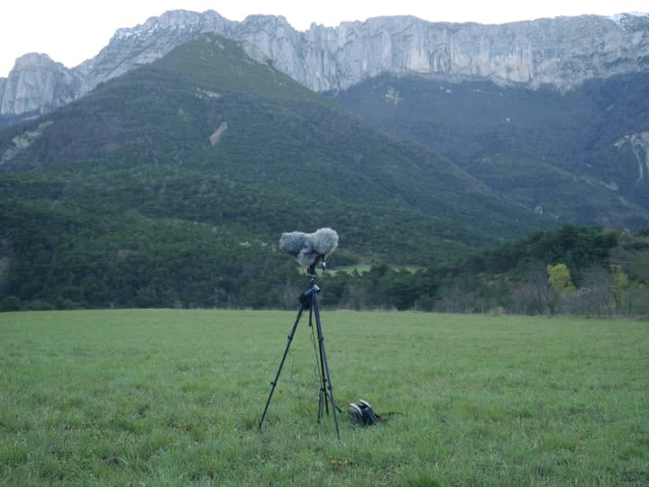
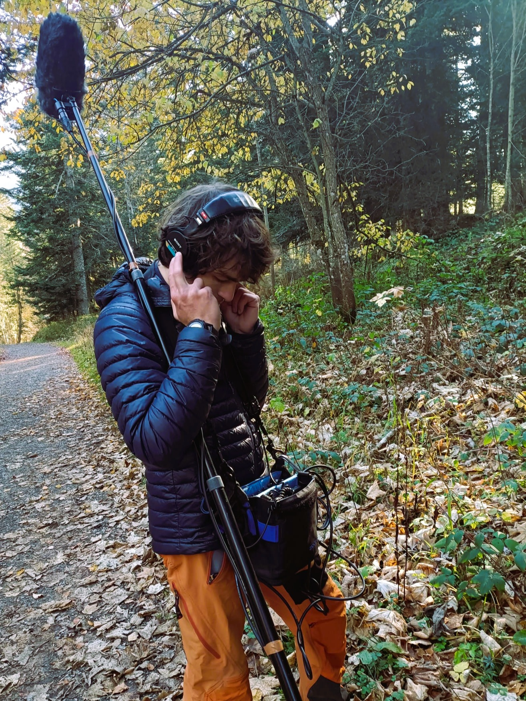
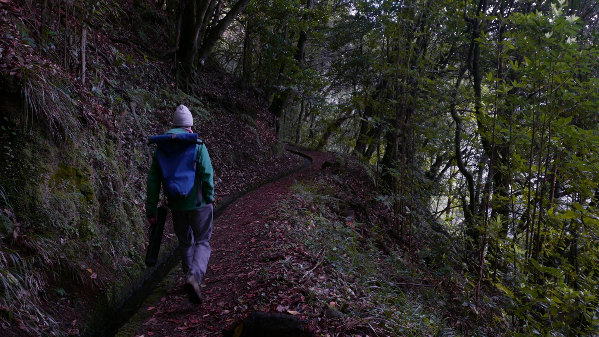

Prises de son - Phonographies - Fragments sonores
« L’enregistrement field recording n’est pas une composition musicale. Il s’agit d’une captation pure et simple de l’environnement sonore. Il offre à l’auditeur une expérience sensorielle qui n’implique que l’ouïe, c’est alors à lui de compléter, par l’attention et l’imagination, l’information structurellement incomplète qui lui est proposée. En ce sens, il y a une véritable proposition artistique, une stimulation de l’auditeur par un preneur de son qui décide de tendre son micro à un endroit et un moment donnés»
Chants d'oiseaux
Blongios nain au lac du Salagou (Hérault)
Troglodyte mignon - tout proche (Isère)
Pinson des arbres - chrus matinal (Madère)
Merle noir - chorus matinal - Solo (Hérault)
Rossignol Philomèle - tout proche (Var)
Roitelet triple-bandeau (Hérault)
Pinson des arbres - tout proche (Hérault)
Merle noir - tout proche (Madère)
Roitelet triple-bandeau (Hérault)
Merle noir (Madère)
Fauvette à tête noire – chant court (Hérault)
Rouge-gorge - tout proche (Hérault)
Merle noir (Hérault)
Rouge‑gorge (Hérault)
Fauvette à tête noire (Hérault)
Mammifères sauvages
Loups – hurlements spontanés (Vercors)
Brâme du Cerf au coeur du Mercantour
Loups – adultes et jeunes au loin (Vercors)
Loups – hurlements provoqués (humains)
Aboiements de chevreuil dans la forêt de Saou (Drôme)
Insectes
Pas de fourmis sur micro contact (Isère)
Fourmilière toute proche (Isère)
Troupeaux
Passage d'un troupeau en montagne (Mercantour)
Troupeau – Braiement d'âne (Mercantour)
Troupeau – ambiance calme (Mercantour)
Sonnaille et brebis qui paturent (Mercantour)
Geophonie
Passage d'eau dans une turbine (Vercors)
Grotte du Bournillon (Vercors)
Rivière de l'Eyrieux - Hydrophone (Ardèche)
Glace fondue - Glacière de Font d'Urle (Vercors)
Glace fondue - Glacière de Corrençon en Vercors
Gouttes percutent une goutière (Saint-Laurent du Pape)
Paysages sonores
Ambiance sonore de la forêt du Peuil (Isère)
Souffles à Port Leucate (Aude)
Réveil du village de Sigonce (Alpes-de-Haute-Provence)
Vagues, proches, océan Atlantique (Finistère)
Anthropophonie
Dévoilage d'une jante de vélo - Chambéry
Station de Tram - Grenoble
Netoyage d'un pétrin - Lozère
Eolienne Tripalium - Lozère
Braises dans un four à pain - Lozère
Câble téléphérique - Grenoble
Propositions
Interventions
Un voyage sonore à la maison autonomie de Tullins
Invitation par le photographe Arnaud Auria dans le cadre de son projet "Modernes à la campagne" pour le volet "Trois transmissions" : "Trois transmission étudie la manière dont les exploitations nucicoles passent de mains en mains au fil des générations. Ce projet étudie trois cas de figure particuliers, avec trois approches distinctes (film documentaire, photo reportage, reportage participatif)".
Durant cette intervention, les participant·es ont vécu un voyage sonore immobile et immersif. Le dispositif technique leur a permis de cheminer entres les sons de l'océan, places de marché, estives et de troupeaux, brâme du cerf, jusqu'aux chemins enneigés des hauts plateaux du Vercors.


 © Photos Arnaud Auria
© Photos Arnaud Auria
Ateliers
Festival Numéro Zero : Field recording et reconnaissance des chants des oiseaux
Nous discuterons des bases techniques de l’enregistrement de terrain : les différences de configurations d’enregistrement, la diversité des microphones et le fonctionnement des enregistreurs. Nous profiterons ensuite de l’ambiance sonore matinale et d’une petite balade pour mettre en pratique ces techniques.
Nous aurons une attention particulière sur les chants d’oiseaux - dont la captation mettra au défi nos compétences de preneur.euses de son - et nous formerons nos oreilles à identifier les espèces à l’origine de ces chants.
Formation Field recording pour Radio Campus
Dans le cadre de la semaine de formation de Radio Campus Grenoble, une formation field recording, centrée sur la pratique de la captation sonore en milieu urbain


 



Installations
Découverte sonore d'un jardin urbain (Grenoble)
Exposition sonore in situ.
L’enjeu ici est de proposer d’écouter des facettes choisies du lieu, d’utiliser le matériel d’enregistrement comme des outils de décalage d’écoute voire de chercheur de son. Plusieurs dispositifs sonores sont proposés, installez-vous confortablement, et plongez dans l'écoute.Dispositif d’écoute 1 : L’écoute du vivant qui grouille
Un microphone imperméable et sensible (hydrophone) plongé dans un compost très actif. On réalise en direct et avec ses oreilles que la vie grouille, court , glisse…Dispositif d’écoute 2 : Un hydrophone plongé dans le puits
Un hydrophone plongé dans un puits. Deux autres microphones (omnidirectionnels) sont disposés autour de la cavité du puits. Les trois microphones sont reliés à un enregistreur et à deux casques. L’hydrophone capte les sons qui se prpoagent dans l’eau du puits, les deux microphones omnidirectionnels captent la résonnance de la cavité. Les participant·es sont invité·s à faire fonctionner la poulie pour remplir le seau d’eau, à verser l’eau d’un arroser dans le puits et d’expérimenter les différents sons que l’on peut produire.Dispositif d’écoute 3 : Des micros dans les arbres.
Deux microphones omnidirectionnels sont fixés en haut d’un arbre, dans les branches. Au pied de cet arbre des casques branchés à un enregistreur diffusent les sons captés tout là-haut. Les participants se retrouvent plongés à plusieurs mètres de hauteurs, dans le vent, le bruissement des feuilles et quelques chants d’oiseaux.Dispositif d’écoute 4 : Un micro dans la ruche
Un microphone est branché à un système sans fil (HF). Il est introduit dans une ruche et relié à un enregistreur et des casques à une dizaine de mètres. Les participants se retrouvent immergé dans la ruche au cœur de la vie des abeilles.Dispositif d’écoute 5 : Des micros dans les hautes herbes
Un couple stéréo constitué de deux microphones très sensibles installés dans les hautes herbes d’une zone laissée en friche. Là où l'œil ne distingue pas de vie, pouvons-nous capter des sons intéressants ?Dispositif d’écoute 6 :Un micro canon pour isoler les sons
Un microphone très directionnel est proposé. Les participants peuvent se promener dans le jardin pour cueillir les sons dénichés.Workshops
A propos
Qui suis-je
Je suis guide nature, audio-naturaliste et preneur de son. Passionné par l’étude et la compréhension du vivant, en particulier par l’évolution des chants des oiseaux, j’ai à cœur de partager et d’explorer ces mystères par une démarche qui mêle les approches scientifiques, sensibles et artistiques.
Dans cette démarche, le son me sert de fil conducteur. L’écoute et la captation sonore sont de formidables moyens de plonger dans l’exploration du monde qui nous entoure. J’apprécie particulièrement les enregistrements de terrains, dits “field-recording” véritables affûts sonores, permettant de (re)constituer des paysages.. sonores !
J’anime donc des balades à la découverte de l’environnement sonore, des ateliers de prises de son et des expositions sonores. Le son offre aussi la possibilité de questionner le lien qu’il existe entre le monde vivant et les humains, par la récolte de témoignages oraux : quels échos ces chants d’oiseaux ont-ils dans notre langage, dans nos histoires et dans nos vies ?
Matériel
Du métériel professionnel de prise de son
Pour tenter de capter la finesse et a richesse du vivant, j'utilise du matériel professionnel. Bien souvent, je me sers de couples stéréophoniques dans différentes configurations : Blumlein, mid-side, ORTF. Ils sont associés à des protections contre le vent et connectés à des enregistreurs numériques.Du métériel pédagogique de prise de son
Ce matériel a vocation à être manipulé par le public pour explorer la pratique de la prise de son. Divers microphones pour différentes configurations : Une parabole, des microphone très directionnels, des hydrophones, des microphones contact, des microphones de repaortages...

 





Contact
Vous pouvez m'écrire par email : sacha.julien@protonmail.me